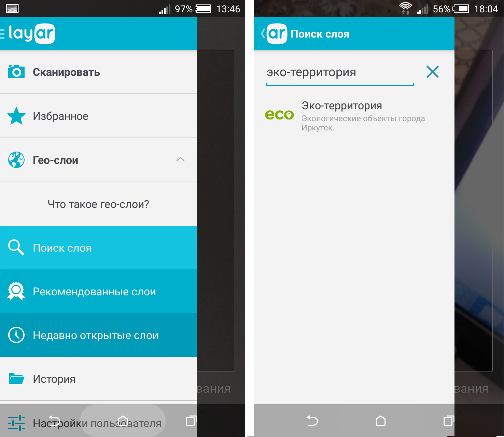
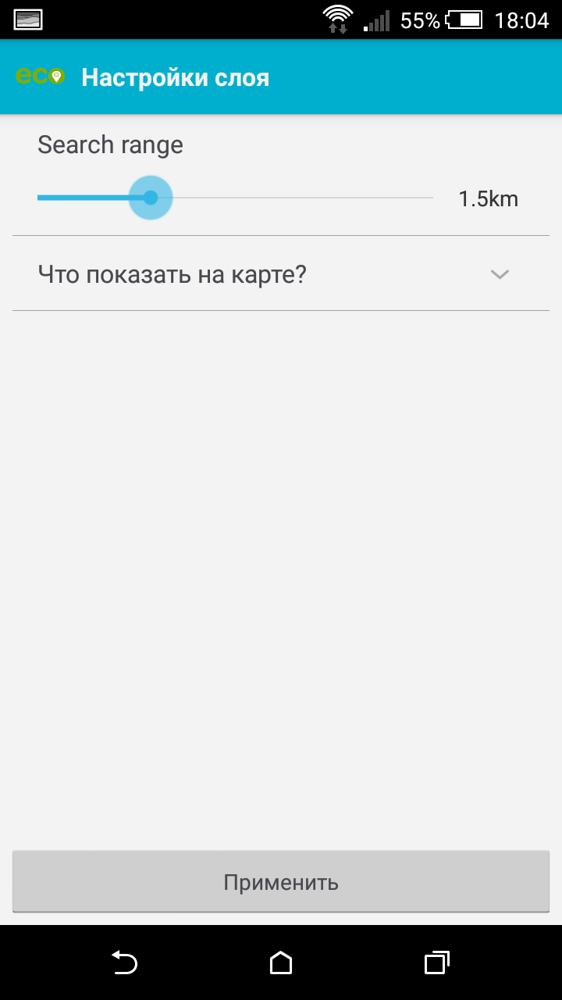
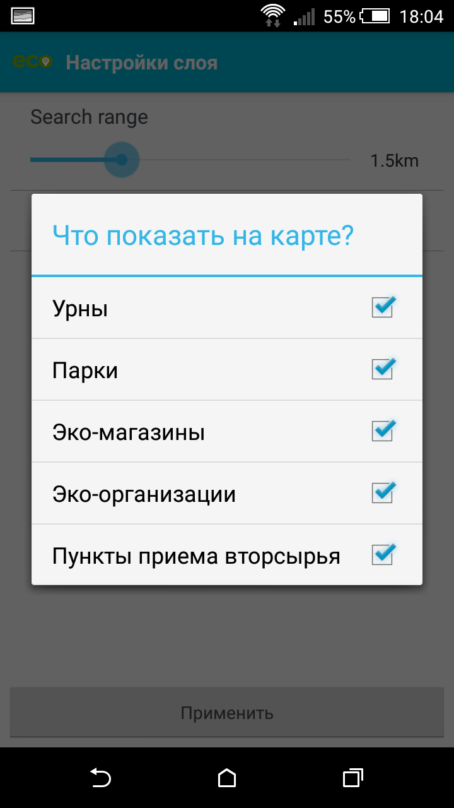
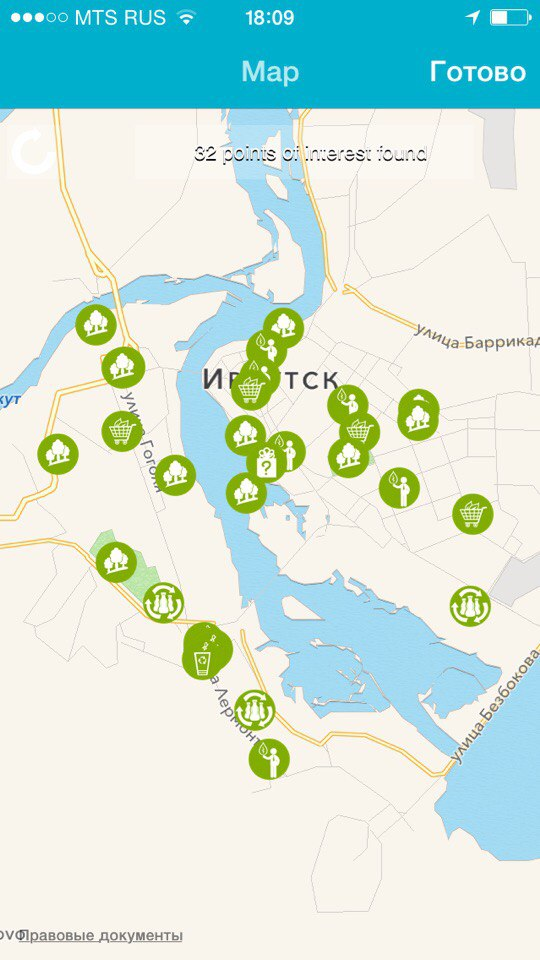
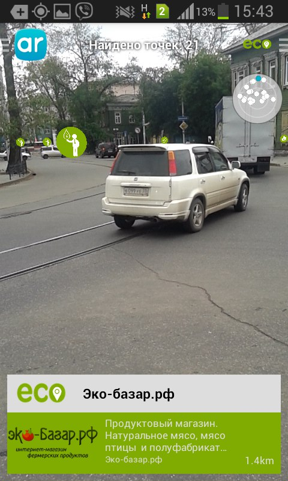
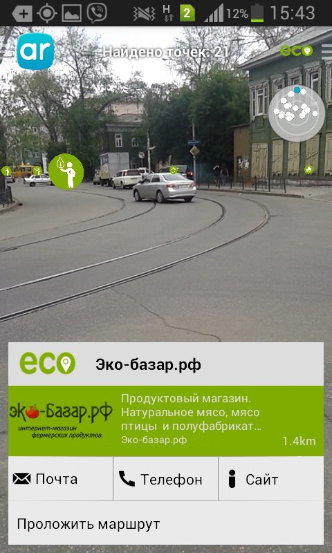
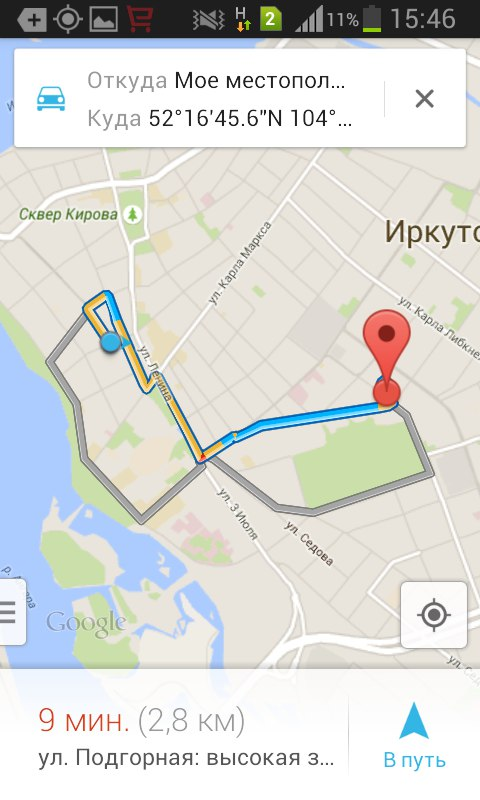

* парки, скверы, сады, усадьбы – места отдыха горожан и гостей города;
* эко-магазины – магазины, предлагающие экологическое питание, одежду, предметы быта;
* пункты приема вторсырья и отходов;
* организации, контролирующие, помогающие, решающие, поднимающие - проблемы экологии города.
Приложение «Эко-территория» можно активировать, запустив браузер на мобильном устройстве, раскрыв меню «Гео-слои» выбираем «поиск слоя» и водим соответствующие название «Эко-территории» или использовать более простую схему, основанную на считывании QR-кода, рисунок 1.

осле запуска приложения надо настроить фильтры: выбрать радиус охвата и необходимую категорию эко-объектов города, рисунок 2.
 Результатом корректной настройки фильтров является отображение на экране смартфона пиктограмм объектов, соответствующей категории, располагающихся в указанной нами области охвата и отвечающие углу и направлению сканирования смарфоном городской инфраструктуры, рис. 3.
Объекты каждой категории отображается на экране мобильного устройства в виде иконок, а внизу экрана выводится информация (текстовая, аудио, видео), характеризующая тот или иной объект, рисунок 4
 Дойти до нужного объекта поможет опция «Маршрут», которая не только построит нужный маршрут, но и будет сопровождать вас до объекта голосовыми оповещениями, рис.5
